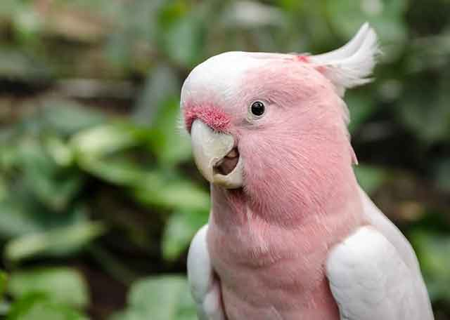

앵무새 키우기 쉬울까?
이색 반려동물의 수요가 높아지면서 앵무새 역시 관심이 높아져 가는 반려동물 중 하나입니다. 과거에는 동물원이나 가야 볼 수 있었던 앵무새지만, 이제는 가정에서도 키우는 것을 종종 볼 수 있습니다. 하지만 강아지, 고양이처럼 오랜 시간 사람의 생활에 익숙해져 있는 동물과는 달리 앵무새는 사람과 함께 한지 상대적으로 짧아서 만약 키우기로 했다면, 키울 때 어떤 문제가 있는지 반드시 살펴볼 필요가 있는 데요. 반려동물로 앵무새를 키우고 싶다면 그 전에 키우기 쉬운지를 먼저 살펴볼 필요가 있겠죠?

[소음]
맑고 청정한 산속을 거닐다 보면 맑고 청량한 소리로 지저귀는 새 소리를 들을 수 있습니다. 그래서 앵무새 역시 맑은소리를 내지 않을까 생각하기 쉽지만, 앵무새는 날카로운 금속성 소음을 냅니다. 물론 모든 앵무새가 귀 아픈 소리를 내는 것은 아니지만, 크기가 크거나 일부 앵무새는 견디기 힘든 소음을 내곤 합니다. 따라서 소음에 취약하거나 소음이 나면 곤란한 환경에 거주하는 분이라면 앵무새 키우기를 심각하게 고려해 보셔야 합니다.

[청소]
어떤 반려동물이든 반려 인의 부지런함은 기본 사항인 것 같습니다. 앵무새도 마찬가지인데요. 작은 소형 새 두어 마리를 키운다면, 심하게 지저분해지는 일이 없겠지만 몸집이 크거나 숫자가 많아지면 심한 악취를 유발할 수 있고 새장이 더러워지기 쉽습니다. 따라서 매일 부지런히 청소해줄 수 있는 성실함과 노력이 필요합니다.
[입질]
반려동물을 키울 때 반드시 고려해야 할 사항이 '입질'입니다. 이것은 반려동물과 반려인 모두에게 좋지 못한 상황으로 '입질' 여부를 확실하게 아셔야 하는 데요. 크기가 크지 않은 소형 앵무새라도 세게 물면 피가 날 정도니 큰 앵무새는 말하지 않아도 되겠죠. 입질이 없는 앵무새도 많지만, 일부 앵무새는 입질이 있을 수 있어 이 부분도 확실히 해 두는 것이 좋습니다.
[긴 수명]
다른 반려동물과 달리 앵무새는 긴 수명을 가졌습니다. 소형 종은 비교적 짧은 7~10년 이내지만, 크기가 큰 앵무새는 80년 이상 살기도 합니다. 반려 새와 오랜 시간 함께 할 수 있다는 점은 장점이긴 하나 사람보다 오래 살게 된다면 문제가 생길 수 있습니다. 수명이 길다는 점도 충분히 고려해 입양해야겠죠.
이런 사항 외에도 앵무새의 질병이나 잦은 일거리 등을 고려해야 하는 것이 앵무새 키우기입니다. 앵무새를 키우고자 하는 의지는 좋지만, 키우면서 생길 수 있는 각종 문제점을 먼저 생각하시고 충분히 심사숙고한 후에 입양하는 것이 좋겠습니다.
반려동물과 함께한다는 것은 즐겁고 행복한 일입니다. 하지만 각각의 반려동물 특성을 제대로 이해하지 못하고, 책임감 또한 없다면 반려동물에겐 큰 상처가 될 수 있습니다. 똑똑하면서도 아름다운 앵무새! 키우기 전 문제 사항을 충분히 확인하신 후 입양하시길 바랍니다.
[출처] 반려견의 행복추구권! 삶의 질을 높이는 방법 ｜ 작성자 땡자